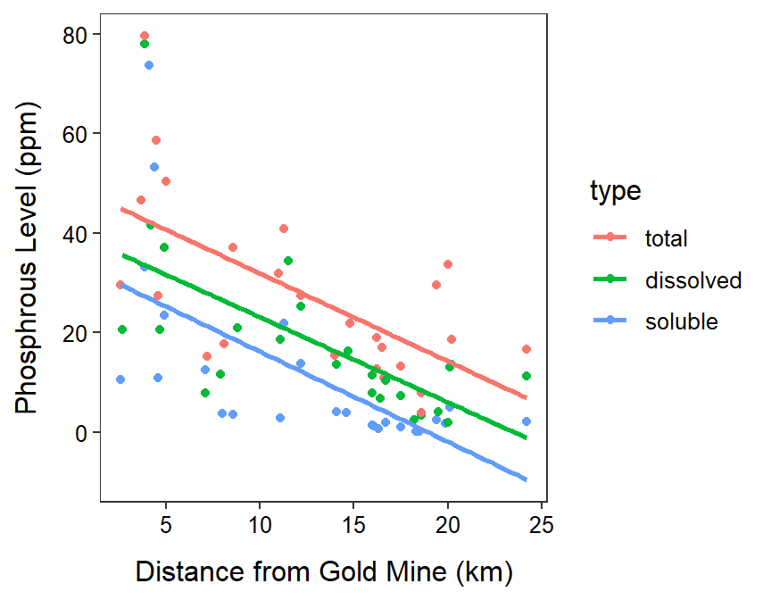

| Gender | MALE | Sub-Model (\(\mu_{WAGE|EXPER}=\)) |
|---|---|---|
| female | 0 | \(\alpha+\beta EXPER\) |
| male | 1 | \((\alpha+\delta_{1})+(\beta+\gamma_{1})EXPER\) |
| Region | IO | RS | CO | WA | Sub-Model (\(\mu_{CSIZE|CCL}=\)) |
|---|---|---|---|---|---|
| Arabian Gulf | 0 | 0 | 0 | 0 | \(\alpha+\beta CCL\) |
| Indian Ocean | 1 | 0 | 0 | 0 | \((\alpha+\delta_{1})+(\beta+\gamma_{1})CCL\) |
| Red Sea | 0 | 1 | 0 | 0 | \((\alpha+\delta_{2})+(\beta+\gamma_{2})CCL\) |
| Caribbean | 0 | 0 | 1 | 0 | \((\alpha+\delta_{3})+(\beta+\gamma_{3})CCL\) |
| West Atlantic | 0 | 0 | 0 | 1 | \((\alpha+\delta_{4})+(\beta+\gamma_{4})CCL\) |
ht <- read.csv("https://raw.githubusercontent.com/droglenc/NCData/master/HawksbillTurtles.csv")
ht$Region <- factor(ht$Region,
levels=c("Arabian Gulf","Indian Ocean","Red Sea",
"Caribbean","West Atlantic"))
ivr.ht <- lm(Clutch.Size~CCL+Region+CCL:Region,data=ht)
cfs.ht <- formatC(cbind(Ests=coef(ivr.ht),confint(ivr.ht)),format="f",digits=2)
cbind(Est=coef(ivr.ht),confint(ivr.ht)) Est 2.5 % 97.5 %
(Intercept) -8.0191114 -82.8867647 66.8485419
CCL 1.2312160 0.1766907 2.2857413
RegionIndian Ocean 187.9734301 -68.3678669 444.3147271
RegionRed Sea -67.0526534 -200.1527159 66.0474092
RegionCaribbean 84.7419159 -8.0103392 177.4941710
RegionWest Atlantic 46.8994651 -84.7456717 178.5446019
CCL:RegionIndian Ocean -2.4123532 -6.0622733 1.2375669
CCL:RegionRed Sea 1.2973460 -0.6075723 3.2022643
CCL:RegionCaribbean -0.6746593 -1.8508311 0.5015126
CCL:RegionWest Atlantic -0.2750907 -1.8015122 1.2513307## You were asked not to use R, but this is what it would look like
nd <- data.frame(CCL=c(90,90,90),Region=c("Arabian Gulf","Indian Ocean","Caribbean"))
( p90 <- cbind(nd,predict(ivr.ht,newdata=nd,interval="confidence")) ) CCL Region fit lwr upr
1 90 Arabian Gulf 102.79033 82.436559 123.1441
2 90 Indian Ocean 73.65197 2.493721 144.8102
3 90 Caribbean 126.81291 118.184378 135.4414
| Type | DP | SP | Sub-Model (\(\mu_{P|DIST}=\)) |
|---|---|---|---|
| Total P | 0 | 0 | \(\alpha+\beta DIST\) |
| Total Dissolved P | 1 | 0 | \((\alpha+\delta_{1})+(\beta+\gamma_{1})DIST\) |
| Soluble Reactive P | 0 | 1 | \((\alpha+\delta_{2})+(\beta+\gamma_{2})DIST\) |
gm <- read.csv("http://derekogle.com/NCMTH207/modules/ce/data/GoldMine.csv")
gm$type <- factor(gm$type,levels=c("total","dissolved","soluble"))
ivr.gm <- lm(phosp~distance+type+distance:type,data=gm)
cfs.gm <- cbind(Ests=coef(ivr.gm),confint(ivr.gm))
cbind(Est=coef(ivr.gm),confint(ivr.gm)) Est 2.5 % 97.5 %
(Intercept) 49.52108103 37.254998 61.7871642
distance -1.76331862 -2.635300 -0.8913374
typedissolved -9.31068754 -27.156010 8.5346350
typesoluble -15.18830863 -32.560995 2.1843779
distance:typedissolved 0.05362709 -1.191473 1.2987269
distance:typesoluble -0.04993832 -1.287360 1.1874829ggplot(data=gm,mapping=aes(x=distance,y=phosp,color=type)) +
geom_point() +
labs(x="Distance from Gold Mine (km)",y="Phosphrous Level (ppm)") +
theme_NCStats() +
geom_smooth(method="lm",se=FALSE)`geom_smooth()` using formula 'y ~ x'